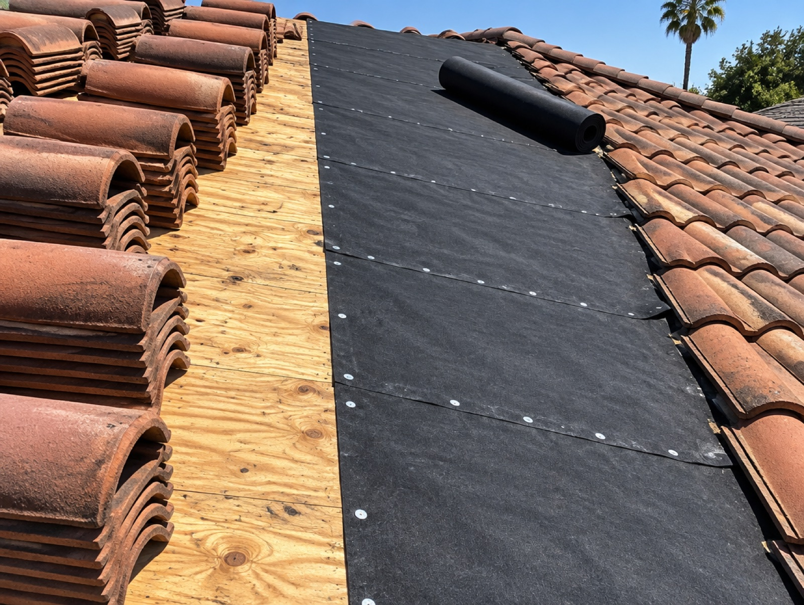
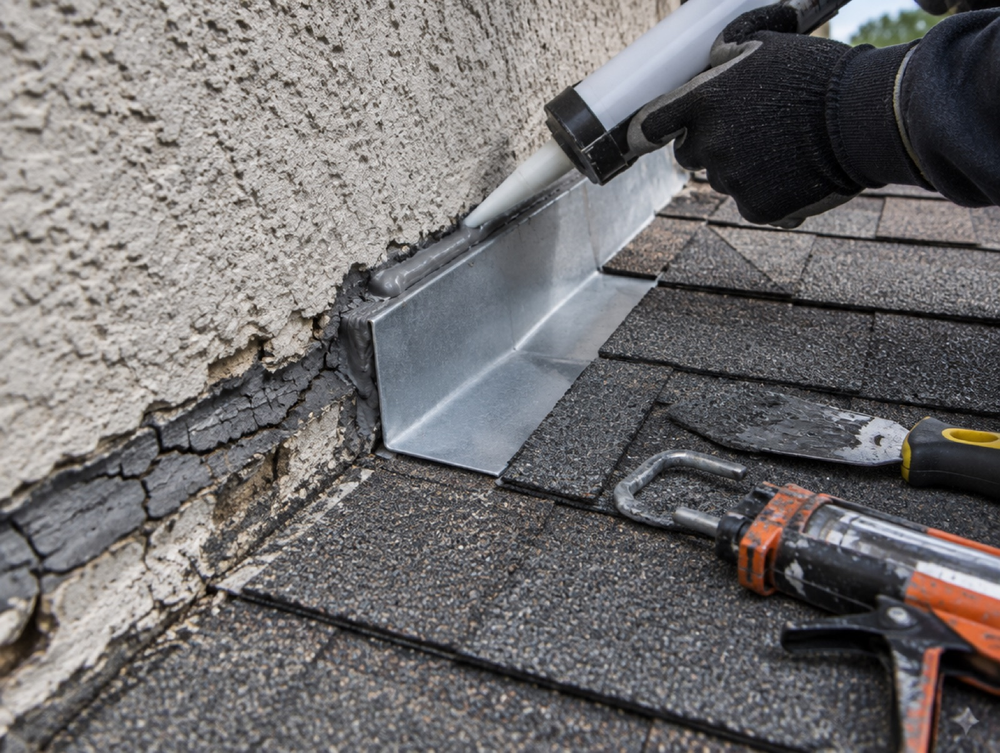
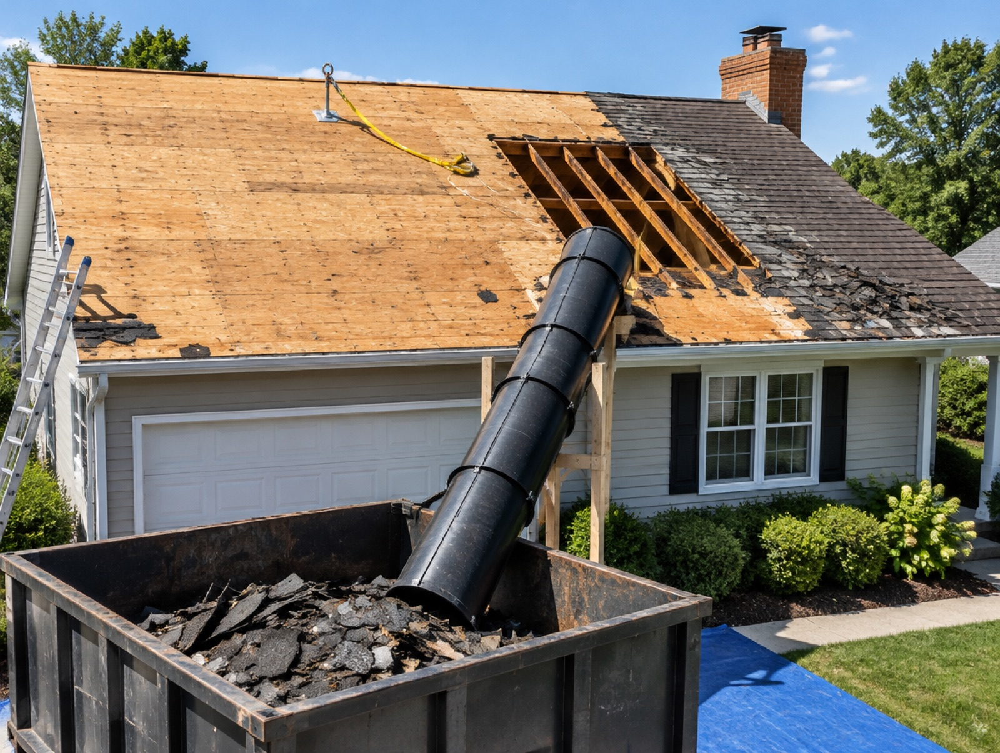

Reparación, cambio y fieltro bajo teja en Rancho Cucamonga.
La mayoría de las casas en Rancho Cucamonga se construyeron con teja de concreto, y ese es el techo al que más nos llaman aquí. La teja casi siempre está bien. Lo que falló es el fieltro de abajo.
También hacemos retiros completos, teja asfáltica, techo plano en ampliaciones y garajes, canaletas e informes de inspección para quien compra o vende en Rancho Cucamonga.
Rancho Cucamonga está en el Inland Empire, y tramitamos el permiso con su ciudad igual que en cualquier otro lado donde trabajamos.

Encontramos por dónde entra el agua de verdad, que casi nunca es donde está la mancha en el techo.
Más
Retiro, revisión de la base, fieltro nuevo, techo nuevo, permiso tramitado e inspección final aprobada.
MásLa teja dura cincuenta años. El fieltro de abajo no. Esa diferencia es el trabajo de techos más común en este condado.
MásUna foto de la mancha o del techo le sirve más que un formulario. Le decimos qué creemos que es antes de que alguien salga.
Pide tu cotización